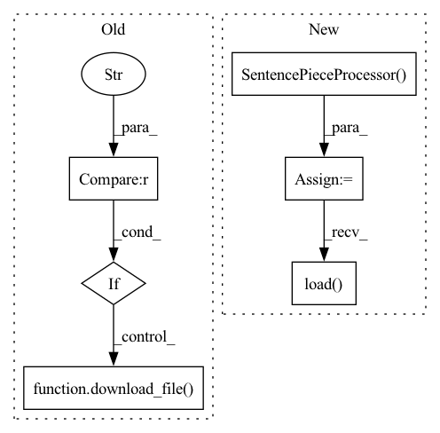

Pattern ID :11871
Before Change
replace_existing=True,
)
if "tok_voc_file" in hparams :
download_file(
source=hparams["tok_voc_file"],
dest=save_vocab_path,
replace_existing=True,
)
tokenizer = hparams["tokenizer"]()
grap all the .txt files for transcriptsAfter Change
)
// Defining tokenizer and loading it
tokenizer = spm.SentencePieceProcessor()
tokenizer.load( save_model_path)
grap all the .txt files for transcripts
logging.info("generating datasets...")
data_folder = hparams["data_folder"]In pattern: SUPERPATTERN
Frequency: 3
Non-data size: 6
Instances Fragment ID: 39936265
Project Name: speechbrain/speechbrain
Commit Name: b57129aa5ffdb25ebaddbe3b6d8904bf0486cdad
Time: 2021-01-11
Author: jzhong9@u.rochester.edu
File Name: recipes/LibriSpeech/LM/experiment.py
M Class Name: AnonimousClass
N Class Name: AnonimousClass
M Method Name: data_io_prepare(2)
N Method Name: data_io_prepare(1)
M Parent Class:
N Parent Class:
M File Name: recipes/LibriSpeech/LM/experiment.py
N File Name: recipes/LibriSpeech/LM/experiment.py
M Start Line: 76
M End Line: 183
N Start Line: 72
N End Line: 171
Before Change
replace_existing=True,
)
if "tok_voc_file" in hparams :
download_file(
source=hparams["tok_voc_file"],
dest=save_vocab_path,
replace_existing=True,
)
tokenizer = hparams["tokenizer"]()
// 2. Define audio pipeline:After Change
)
// Defining tokenizer and loading it
tokenizer = spm.SentencePieceProcessor()
tokenizer.load( save_model_path)
// 2. Define audio pipeline:
@sb.utils.data_pipeline.takes("wav")
@sb.utils.data_pipeline.provides("sig") Fragment ID: 39936267
Project Name: speechbrain/speechbrain
Commit Name: 97c243df2f9ea809ff522b17de3fcf2b913a2d01
Time: 2021-01-08
Author: mirco.ravanelli@gmail.com
File Name: recipes/LibriSpeech/ASR/transformer/experiment.py
M Class Name: AnonimousClass
N Class Name: AnonimousClass
M Method Name: data_io_prepare(1)
N Method Name: data_io_prepare(1)
M Parent Class:
N Parent Class:
M File Name: recipes/LibriSpeech/ASR/transformer/experiment.py
N File Name: recipes/LibriSpeech/ASR/transformer/experiment.py
M Start Line: 249
M End Line: 306
N Start Line: 286
N End Line: 299
Before Change
)
// tokenizer.sp.load(save_model_path)
if "tok_voc_file" in hparams :
download_file(
source=hparams["tok_voc_file"],
dest=save_vocab_path,
replace_existing=True,
)
// tokenizer.sp.load(save_model_path)
// defining tokenizer and loading it
tokenizer = hparams["tokenizer"]()
After Change
)
// Defining tokenizer and loading it
tokenizer = spm.SentencePieceProcessor()
tokenizer.load( save_model_path)
// 2. Define audio pipeline:
@sb.utils.data_pipeline.takes("wav")
@sb.utils.data_pipeline.provides("sig") Fragment ID: 39936266
Project Name: speechbrain/speechbrain
Commit Name: 6dd651e4361877efdefb3d5cb3489a35fe80f6f9
Time: 2021-01-07
Author: mirco.ravanelli@gmail.com
File Name: recipes/LibriSpeech/ASR/seq2seq/train.py
M Class Name: AnonimousClass
N Class Name: AnonimousClass
M Method Name: data_io_prepare(1)
N Method Name: data_io_prepare(1)
M Parent Class:
N Parent Class:
M File Name: recipes/LibriSpeech/ASR/seq2seq/train.py
N File Name: recipes/LibriSpeech/ASR/seq2seq/train.py
M Start Line: 223
M End Line: 284
N Start Line: 260
N End Line: 271